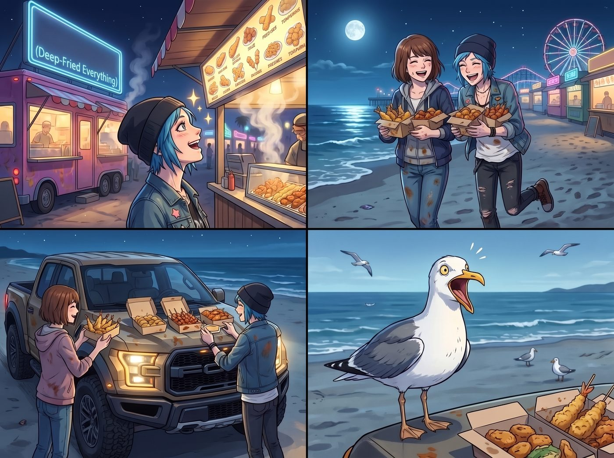
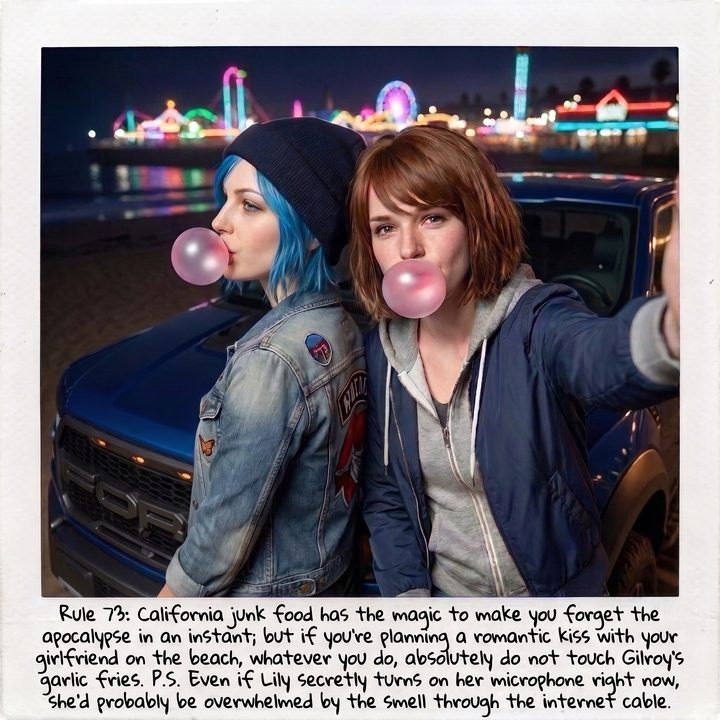

碳水化合物的代價


就在二號車廂的三位留守人員正對著第三頓藍莓鬆餅懷疑人生時，幾百英里外的加州海岸線上，另外兩隻「垃圾熊（Trash Pandas）」正在經歷一場震撼靈魂的卡路里文化衝擊。
在奧勒岡州的阿卡迪亞灣（Arcadia Bay）或是華盛頓州的西雅圖，所謂的「垃圾食物」帶著一股潮濕陰冷的太平洋西北區（PNW）氣息。那通常是雙鯨魚餐廳（Two Whales Diner）裡泡在油脂裡的培根、裝在酸種麵包碗裡的濃稠蛤蜊濃湯，或者是西雅圖街頭那些標榜「有機手工」卻貴得要命的文青甜甜圈。它們的本質是為了幫人在連綿不斷的陰雨天裡儲存過冬脂肪。
但加州的海灘木棧道（Boardwalk）完全是另一個維度的生物。
當夜幕徹底降臨聖塔克魯茲，海濱遊樂園外圍那一排閃爍著霓虹燈光的露天攤販與餐車亮起招牌時，空氣中瀰漫的不是海水的鹹味，而是一股霸道、濃烈、毫無道德底線的高溫油炸香氣。
「Max……我覺得我們以前在奧勒岡州吃的根本不算垃圾食物，那頂多只能算『稍微有點油的營養餐』。」
Chloe 站在一家掛著「萬物皆可炸（Deep-Fried Everything）」霓虹燈牌的攤位前，仰著頭看菜單，藍色的眼睛裡閃爍著宛如哥倫布發現新大陸般的虔誠光芒。
在這裡，沒有 Kate 的無麩質警告，沒有 Victoria 的精緻擺盤，更沒有 Lily 的熱量損耗模型。這裡是美式嘉年華油炸煉金術與加州墨西哥街頭飲食（Cal-Mex）的終極狂歡之地。
十分鐘後，兩人抱著四個滲著油漬的紙盒，搖搖晃晃地走回沙灘上的猛禽皮卡旁。當她們把食物在引擎蓋上一字排開時，連海鷗都發出了敬畏的叫聲。
「這簡直是人類對抗自然法則的最高傑作！」
Chloe 捏起一顆剛出鍋、滾燙的油炸奧利奧（Deep-Fried Oreo），外層是炸得金黃酥脆的鬆餅麵糊，上面還撒了厚厚一層白糖粉。她一口咬下去，原本堅硬的巧克力餅乾在高溫油炸下已經徹底軟化，和裡面融化的香草夾心融為一體，在嘴裡爆漿開來。
「噢！我的血管剛剛發出了一聲慘叫，但我的靈魂升天了！」Chloe 激動得直拍引擎蓋，順手又抓起一根淋滿番茄醬的巨型玉米熱狗棒（Corn Dog），「快嚐嚐這個！還有旁邊那個油炸奶油夾心蛋糕（Deep-Fried Twinkie）！如果《屍樂園》裡的 Tallahassee 來了加州，他根本不需要打喪屍，他會直接死於幸福的心肌梗塞！」
Max 則是把目標鎖定在了加州的真正霸主——墨式碳烤牛肉起司薯條（Carne Asada Fries）上。
在西北區，薯條只是漢堡旁邊軟趴趴的配角；但在加州，薯條是一座地基。金黃脆口的薯條上，鋪滿了切碎的炭烤牛排、融化的切達起司、一大杓翠綠的酪梨醬（Guacamole）、酸奶油以及醃漬墨西哥辣椒。
「天哪……」Max 用塑膠叉子捲起一團拉絲的起司和牛肉塞進嘴裡，滿足得眼睛都瞇了起來，「這才叫真正的碳水炸彈。如果 Victoria 看到這盤東西，她大概會當場撥打 911 舉報有人蓄意謀殺她的體脂率。」
「別管那個老錢大小姐了，來試試這個當地特產！」
Chloe 打開了最後一個紙盒。那是聖塔克魯茲隔壁的「世界大蒜之都」吉爾羅伊（Gilroy）最負盛名的重度大蒜薯條（Gilroy Garlic Fries）。薯條上不是撒了點大蒜粉，而是直接鋪滿了一層厚到令人髮指的、用橄欖油爆香的半生碎蒜末與巴西里葉。
兩人毫無顧忌地大快朵頤。海風吹過，把油炸麵糊上的糖粉吹得她們滿臉都是。她們一邊吃，一邊肆無忌憚地嘲笑著此刻遠在華盛頓州、肯定正在吃著某種無聊養生餐的三個室友。
然而，當這場高達五千卡路里的垃圾食物狂歡結束後，一個極度尷尬的物理問題浮現了。
夜色更深了，海浪拍打著沙灘，周圍安靜得只剩下摩天輪轉動的微弱機械聲。
吃飽喝足的 Chloe 擦了擦嘴角的起司醬，看著身邊臉頰沾著糖粉的 Max，眼神再次變得溫柔而曖昧。畢竟，她可是特意威脅了 Lily 開啟「語義盲區」，才換來了這不受監控的浪漫夜晚。
「嘿，Max……」Chloe 壓低了聲音，帶著一絲壞笑湊了過去，準備延續剛才那個未完的深吻。
Max 也紅著臉閉上了眼睛，迎了上去。
兩人的鼻尖剛剛碰到一起，彼此呼出的氣息交匯。
下一秒，兩人同時猛地向後仰頭，發出了劇烈的乾嘔與爆笑聲。
「咳咳咳！天哪！Chloe！」Max 笑得眼淚都飆出來了，拼命用手在鼻子前搧風，「妳嘴裡的味道就像剛生吞了一整座義大利農場的大蒜！」
「妳還好意思說我？！」Chloe 崩潰地抓著自己的藍髮，笑得在引擎蓋上打滾，「妳聞起來就像一個剛從墨西哥辣椒油鍋裡撈出來的起司球！老娘精心策劃的加州海灘浪漫之夜，居然毀在一盒吉爾羅伊大蒜薯條手裡！」
那股濃烈到足以把德古拉伯爵當場送走的蒜味，徹底粉碎了所有的旖旎氣氛。別說接吻了，她們現在連面對面呼吸都覺得像是在進行生化武器攻擊。
最終，兩個渾身散發著油炸味和大蒜味的女孩，只能放棄了所有的浪漫幻想，改成背對背坐在引擎蓋上，一人嚼著三片薄荷口香糖，對著太平洋的夜空傻笑。
Max 摸索著拿起放在一旁的寶麗來相機，反手舉高，對準了背靠著背、嘴裡還吹著粉紅色口香糖泡泡的兩人。
「喀嚓。」
相紙吐了出來。Max 晃了晃照片，借著遠處遊樂園的霓虹燈光，用馬克筆在照片底部寫下：
『規則第 73 條：加州的垃圾食物擁有讓人一秒忘記末日的魔力；但如果你計畫在海灘上和女朋友浪漫接吻，千萬、絕對不要碰吉爾羅伊的大蒜薯條。P.S. 就算 Lily 現在偷偷打開麥克風，她大概也會被這股味道隔著網線薰到當機。』